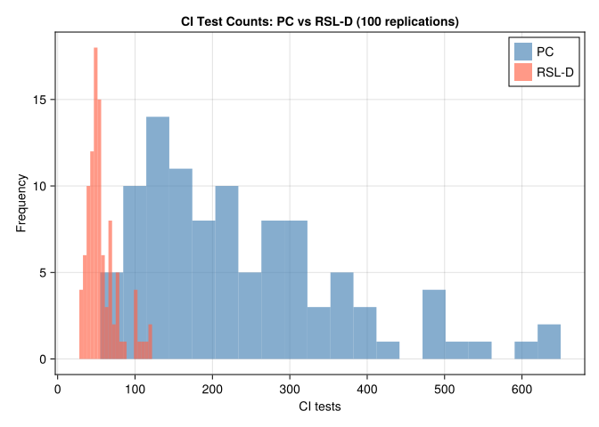

using CausalInference
using RecursiveCausalDiscovery
using CausalGraphs
using Graphs
using CairoMakie
using Statistics
using LinearAlgebra
using Random
using Printf
using DataFrames
using Distributions: Normal, quantile10 Causal Discovery: Observed Variables
In earlier chapters we assumed the causal graph was known, or at least that a defensible DAG could be drawn from domain knowledge. But what if we want to learn the causal structure from observational data? This is the causal discovery problem.
10.1 The Problem
Given \(n\) i.i.d. observations of \(p\) variables \((X_1, \ldots, X_p)\), we want to recover the directed acyclic graph (DAG) \(G\) that generated the data.
There is a fundamental limit: observational data alone cannot distinguish between DAGs that encode the same conditional independence (CI) structure. The set of DAGs that are observationally equivalent is called a Markov equivalence class (MEC). The best we can do from data is to identify the MEC, represented as a Completed Partially Directed Acyclic Graph (CPDAG).
A CPDAG has the same skeleton (undirected edges) as all DAGs in its MEC. Some edges can be oriented (they have the same direction in every member of the MEC); others remain undirected because both directions are consistent with the CI structure.
10.1.1 Why some edges cannot be oriented
Three DAGs are observationally equivalent — they produce the same set of conditional independences — and therefore indistinguishable from data:
\[X \to Y \to Z \qquad X \leftarrow Y \leftarrow Z \qquad X \leftarrow Y \to Z\]
All three imply \(X \perp\!\!\!\perp Z \mid Y\) and no other CI. Their CPDAG shows \(X - Y - Z\) with no arrowheads.
The structure \(X \to Y \leftarrow Z\) (a collider at \(Y\)) is not equivalent: here \(X \perp\!\!\!\perp Z\) but \(X \not\!\perp\!\!\!\perp Z \mid Y\). Because it has a unique CI signature, the \(\to Y \leftarrow\) orientation is identifiable from data. Algorithms orient these colliders; non-collider edges often remain undirected.
10.1.2 What a CPDAG tells you
A directed edge \(X \to Y\) in the CPDAG means: in every DAG consistent with the data, \(X\) causes \(Y\). An undirected edge \(X - Y\) means some consistent DAGs have \(X \to Y\) and others have \(X \leftarrow Y\) — data alone cannot decide.
For causal estimation: once you have a CPDAG, you can use background knowledge (temporal ordering, experimental context) to orient the remaining undirected edges, and then apply identification strategies from earlier chapters.
10.2 Simulation
We generate a random Gaussian linear DAG using an Erdős–Rényi random graph with 8 nodes and edge probability 0.35. Each edge \(j \to i\) generates a structural equation
\[X_i = \sum_{j \in \text{pa}(i)} \beta_{ji} X_j + \varepsilon_i, \quad \varepsilon_i \sim N(0,1)\]
where coefficients \(\beta_{ji}\) are drawn uniformly from \([-1, -0.25] \cup [0.25, 1]\).
Random.seed!(2025)
n_vars = 8
n_samples = 2000
edge_prob = 0.35
labels = ["X$i" for i in 1:n_vars]
adj_mat = gen_er_dag_adj_mat(n_vars, edge_prob)
data_mat = gen_gaussian_data(adj_mat, n_samples)
true_dag = SimpleDiGraph(adj_mat)
true_skel = SimpleGraph(true_dag)
@printf "Variables: %d Samples: %d True edges: %d\n" n_vars n_samples ne(true_skel)Variables: 8 Samples: 2000 True edges: 9draw_graph(adjmat_to_admg(adj_mat, labels); direction="TB")10.3 CI Test Infrastructure
Both algorithms use a Fisher-Z conditional independence test appropriate for Gaussian data. Given the partial correlation \(\hat\rho_{XY \mid Z}\), the test statistic is
\[T = \sqrt{n - |Z| - 3} \cdot \operatorname{atanh}(\hat\rho_{XY \mid Z}) \;\sim\; N(0,1) \quad \text{under } H_0: X \perp\!\!\!\perp Y \mid Z\]
Choosing the significance level \(\alpha\) involves a bias-variance tradeoff on the skeleton:
- Low \(\alpha\) (e.g., 0.001): conservative, keeps more edges. Fewer false removals (false negatives) but may retain spurious edges (false positives). Produces a denser skeleton.
- High \(\alpha\) (e.g., 0.05): liberal, removes more edges. Fewer spurious edges but may discard real ones. Produces a sparser skeleton.
With \(n = 2000\) and \(p = 8\) we use \(\alpha = 0.01\), a common default. With smaller \(n\) or larger \(p\), consider lowering \(\alpha\) to avoid over-pruning.
We wrap fisher_z in a counter to track exactly how many CI tests each algorithm calls:
function make_counted_ci(data, sig)
count = Ref(0)
function ci(x, y, S, d)
count[] += 1
fisher_z(x, y, collect(Int, S), Matrix{Float64}(d), sig)
end
ci, count
endmake_counted_ci (generic function with 1 method)10.4 PC Algorithm
The PC algorithm (Spirtes & Glymour, 1991) starts from a complete undirected graph and removes edges whenever a conditional independence is found. It searches for separating sets \(Z\) of increasing size, conditioning on subsets of the current neighbors. After skeleton discovery, Meek’s rules orient as many edges as possible.
How it works, step by step:
- Start with a complete undirected graph (every pair connected).
- For each pair \((X, Y)\), test \(X \perp\!\!\!\perp Y \mid Z\) for all \(Z \subseteq \text{neighbors}(X) \setminus \{Y\}\), starting with \(|Z|=0\). Remove the edge if any such test passes.
- Repeat with conditioning sets of increasing size until no new edges are removed.
- Identify colliders: if \(X - Z - Y\) and \(X, Y\) non-adjacent, orient as \(X \to Z \leftarrow Y\) only if \(Z\) was not in the separating set of \(X\) and \(Y\).
- Apply Meek’s orientation rules to propagate orientations without creating new colliders or cycles.
sig_level = 0.01
ci_pc, ctr_pc = make_counted_ci(data_mat, sig_level)
cpdag_pc = pcalg(n_vars, ci_pc, data_mat)
skel_pc = SimpleGraph(cpdag_pc)
f1_skel_pc = f1_score(true_skel, skel_pc)
f1_cpdag_pc = f1_score(true_dag, cpdag_pc)
@printf "PC: skeleton F1 = %.3f CPDAG F1 = %.3f CI tests = %d\n" f1_skel_pc f1_cpdag_pc ctr_pc[]PC: skeleton F1 = 0.750 CPDAG F1 = 0.500 CI tests = 205
Note
Reading the output: F1 scores
The F1 score is the harmonic mean of precision and recall, ranging from 0 (worst) to 1 (perfect).
- Skeleton F1 measures whether the algorithm found the right edges regardless of direction. An edge is a true positive if it exists in both the estimated skeleton and the true one.
- CPDAG F1 is stricter: a directed edge \(X \to Y\) is only a true positive if the true DAG also has \(X \to Y\); an undirected edge \(X - Y\) counts as correct if the true DAG has either direction.
A high skeleton F1 with lower CPDAG F1 means the algorithm found the right adjacencies but left some edges unoriented — the typical case when the MEC contains many equivalent DAGs.
Computational complexity: In the worst case, PC tests all subsets of neighbors, giving exponential growth with the maximum degree. In sparse graphs this is manageable; in dense graphs it becomes prohibitive.
10.5 RSL-D Algorithm
RSL-D (Recursive Structure Learning — Diamond-free; Mokhtarian et al., JMLR 2025) works by recursively removing variables that satisfy a removability criterion.
Two sets are central to the criterion:
- Markov boundary \(\text{Mb}(X)\): the minimal set \(S\) such that \(X \perp\!\!\!\perp (\text{all other variables}) \mid S\). Conditioning on \(\text{Mb}(X)\) screens \(X\) off from everything else in the graph. In a Gaussian DAG with no hidden variables, \(\text{Mb}(X)\) consists of \(X\)’s parents, children, and co-parents (other parents of \(X\)’s children) — equivalently, all variables directly adjacent to \(X\) in the skeleton.
- Neighbourhood \(\text{Ne}(X)\): the set of variables directly adjacent to \(X\) in the current skeleton (connected by an undirected edge at this stage of the algorithm).
Under causal sufficiency and faithfulness, \(\text{Mb}(X) = \text{Ne}(X)\); the distinction arises during the algorithm’s recursive steps as variables are removed one by one.
Variable \(X\) is removable if, for every pair \(Y \in \text{Mb}(X)\), \(Z \in \text{Ne}(X)\):
\[\exists\, W \subseteq \text{Mb}(X) \setminus \{Y, Z\} \text{ such that } Y \perp\!\!\!\perp Z \mid W\]
(Lemma 3 of the paper). Removing variables one by one and recording the local neighbourhood structure recovers the full CPDAG.
The intuition behind removability: a variable \(X\) is “removable” if its local neighbourhood structure can be fully characterized without creating ambiguity in the remaining graph. Think of it as peeling off leaf-like variables one at a time — each removal simplifies the problem rather than complicating it.
How it works, step by step:
- Estimate the Markov boundary \(\text{Mb}(X)\) of each variable (all variables that, conditioned on, make \(X\) independent of everything else).
- Find a removable variable \(X\) — one whose neighbourhood satisfies the criterion above.
- Record the local skeleton structure around \(X\), then remove \(X\) from the graph.
- Repeat on the reduced variable set until all variables have been processed.
- Reconstruct the full CPDAG from the recorded local structures.
The key efficiency advantage: RSL-D uses at most \(O(p \cdot d \cdot |\text{MB}|^2)\) CI tests (where \(d\) is the max neighbourhood size). PC can require exponentially many in the worst case as the separator-set search grows.
ci_rsl, ctr_rsl = make_counted_ci(data_mat, sig_level)
cpdag_rsl = rsld(data_mat, ci_rsl)
skel_rsl = SimpleGraph(cpdag_rsl)
f1_skel_rsl = f1_score(true_skel, skel_rsl)
f1_cpdag_rsl = f1_score(true_dag, cpdag_rsl)
@printf "RSL-D: skeleton F1 = %.3f CPDAG F1 = %.3f CI tests = %d\n" f1_skel_rsl f1_cpdag_rsl ctr_rsl[]RSL-D: skeleton F1 = 1.000 CPDAG F1 = 0.947 CI tests = 4310.6 Comparison
Note
Reading the CPDAG figure
In the side-by-side graph display:
- A directed edge \(X_i \to X_j\) means this orientation is invariant across all equivalent DAGs — the algorithm is confident about the direction.
- A bidirected (red) edge \(X_i \leftrightarrow X_j\) in the CPDAG display represents an unoriented edge: both \(X_i \to X_j\) and \(X_i \leftarrow X_j\) are statistically equivalent. This is not a hidden common cause — it means the data cannot determine direction. (Hidden common causes are a latent-variable concept, covered in the next chapter.)
- A missing edge means the algorithm found a conditional independence separating those two variables.
Compare the estimated CPDAG to the true DAG: extra edges are false positives (the algorithm wrongly retained a spurious association); missing edges are false negatives (a true relationship was incorrectly removed by a CI test).
DataFrame(
Algorithm = ["PC", "RSL-D"],
Skeleton_F1 = round.([f1_skel_pc, f1_skel_rsl], digits=3),
CPDAG_F1 = round.([f1_cpdag_pc, f1_cpdag_rsl], digits=3),
CI_Tests = [ctr_pc[], ctr_rsl[]],
)2×4 DataFrame
| Row | Algorithm | Skeleton_F1 | CPDAG_F1 | CI_Tests |
|---|---|---|---|---|
| String | Float64 | Float64 | Int64 | |
| 1 | PC | 0.75 | 0.5 | 205 |
| 2 | RSL-D | 1.0 | 0.947 | 43 |
side_by_side([
(adjmat_to_admg(adj_mat, labels), "True DAG"),
(cpdag_to_admg(cpdag_pc, labels), "PC — estimated CPDAG"),
(cpdag_to_admg(cpdag_rsl, labels), "RSL-D — estimated CPDAG"),
]; note="Red ↔ edges in the CPDAGs are unoriented (not confounded) — both directions are statistically equivalent.")True DAG
PC — estimated CPDAG
RSL-D — estimated CPDAG
Red ↔ edges in the CPDAGs are unoriented (not confounded) — both directions are statistically equivalent.
Note
Interpreting the comparison table
- Skeleton F1 is the primary metric for comparing algorithms: it measures edge recovery independent of orientation, since orientation accuracy is bounded by the MEC.
- CPDAG F1 rewards correctly oriented edges and penalizes leaving orientable edges undirected.
- CI tests is the computational cost metric. Fewer tests means faster runtime, especially important when \(n\) is large and each test involves inverting covariance matrices.
On this dataset RSL-D typically matches or exceeds PC’s accuracy while using substantially fewer CI tests — the advantage grows with \(p\) and graph density.
10.7 Monte Carlo Evaluation
A single dataset can be lucky. We average over 100 replications to get stable estimates.
What to look for in the MC results:
- The mean skeleton F1 is the headline: how often does each algorithm recover the true adjacencies?
- The distribution of CI test counts (shown in Figure 10.3) shows whether the efficiency advantage is consistent or only appears on average.
- High variance in F1 across replications suggests the algorithms are sensitive to the particular random graph — denser or sparser graphs drawn from the same Erdős–Rényi model can be very different problems.
function evaluate_once(seed; n_vars=8, n_samples=2000, edge_prob=0.35, sig=0.01)
Random.seed!(seed)
adj = gen_er_dag_adj_mat(n_vars, edge_prob)
data = gen_gaussian_data(adj, n_samples)
skel = SimpleGraph(SimpleDiGraph(adj))
ci_pc, ctr_pc = make_counted_ci(data, sig)
ci_rsl, ctr_rsl = make_counted_ci(data, sig)
cp_pc = pcalg(n_vars, ci_pc, data)
cp_rsl = rsld(data, ci_rsl)
(
f1_pc = f1_score(skel, SimpleGraph(cp_pc)),
f1_rsl = f1_score(skel, SimpleGraph(cp_rsl)),
ci_pc = ctr_pc[],
ci_rsl = ctr_rsl[],
)
end
mc = [evaluate_once(s) for s in 1:100]
@printf "\nMonte Carlo averages (100 replications, n=%d, p=%d)\n" n_samples n_vars
@printf "%-8s Skeleton F1 CI tests\n" "Method"
@printf "%-8s %10.3f %8.1f\n" "PC" mean(r.f1_pc for r in mc) mean(r.ci_pc for r in mc)
@printf "%-8s %10.3f %8.1f\n" "RSL-D" mean(r.f1_rsl for r in mc) mean(r.ci_rsl for r in mc)
Monte Carlo averages (100 replications, n=2000, p=8)
Method Skeleton F1 CI tests
PC 0.894 237.2
RSL-D 0.946 57.2let
fig = Figure(size=(650, 380))
ax = Axis(fig[1,1];
xlabel = "CI tests",
ylabel = "Frequency",
title = "CI Test Counts: PC vs RSL-D (100 replications)")
hist!(ax, [r.ci_pc for r in mc]; bins=20, color=(:steelblue, 0.65), label="PC")
hist!(ax, [r.ci_rsl for r in mc]; bins=20, color=(:tomato, 0.65), label="RSL-D")
axislegend(ax)
fig
end┌ Warning: Found `resolution` in the theme when creating a `Scene`. The `resolution` keyword for `Scene`s and `Figure`s has been deprecated. Use `Figure(; size = ...` or `Scene(; size = ...)` instead, which better reflects that this is a unitless size and not a pixel resolution. The key could also come from `set_theme!` calls or related theming functions. └ @ Makie ~/.julia/packages/Makie/UjJJY/src/scenes.jl:238

10.8 Summary
Both PC and RSL-D recover the Markov equivalence class from Gaussian observational data. The key practical difference is CI-test efficiency: RSL-D’s recursive removal approach uses far fewer tests than PC’s growing-set search, especially as \(p\) and graph density increase.
From CPDAG to causal estimation: Once a CPDAG is in hand, the workflow continues as follows:
- Use background knowledge to orient undirected edges. Temporal ordering is the most common source: if \(X\) is measured before \(Y\), the edge must be \(X \to Y\). Domain expertise, experimental context, or exclusion restrictions can orient others.
- Check identifiability. With a fully oriented DAG, apply the backdoor, front-door, or ID algorithm (Chapter 3) to determine whether the effect of interest is identifiable.
- Estimate. Use the identified functional with the estimators from Chapter 4 (RA, IPW, AIPW).
If some edges remain undirected after exhausting background knowledge, you can either report the CPDAG and bound the estimand over the equivalence class, or collect additional interventional data to break the remaining equivalences.
Note
What cannot be recovered from observational data alone
Both algorithms identify the CPDAG — the equivalence class — not the true DAG. Certain edge orientations are fundamentally unidentifiable without additional assumptions such as non-Gaussian errors, temporal ordering, or interventional data.
The next chapter addresses a harder problem: recovering the causal skeleton when some variables are unobserved.
11 Causal Discovery: Latent Variables
#| include: false
using CausalInference
using RecursiveCausalDiscovery
using CausalGraphs
using Graphs
using CairoMakie
using Statistics
using LinearAlgebra
using Random
using Printf
using DataFrames
using Combinatorics: powerset
using Distributions: Normal, quantile
# ── Graph helpers (shared with chapter 1) ────────────────────────────────────
function adjmat_to_admg(adj::AbstractMatrix, labels::Vector{String})
n = size(adj, 1)
vs = Symbol.(labels)
di = [(vs[i], vs[j]) for i in 1:n, j in 1:n if adj[i,j] == 1]
make_graph(vertices=vs, di_edges=di)
end
function skeleton_to_admg(g::SimpleGraph, labels::Vector{String})
vs = Symbol.(labels)
bi = [(vs[e.src], vs[e.dst]) for e in edges(g)]
make_graph(vertices=vs, bi_edges=bi)
end
struct MultiSVG; html::String; end
Base.show(io::IO, ::MIME"text/html", m::MultiSVG) = print(io, m.html)
function side_by_side(graphs_titles; direction="TB", note="")
items = String[]
for (g, title) in graphs_titles
svg = to_svg(g; direction=direction)
svg === nothing && continue
push!(items, """<div style="text-align:center;flex:1">
<p style="margin:0 0 4px;font-weight:600">$title</p>$svg</div>""")
end
note_html = isempty(note) ? "" : """<p style="font-size:.85em;color:#666;margin-top:6px">$note</p>"""
MultiSVG("""<div style="display:flex;gap:20px;flex-wrap:wrap;
justify-content:center;align-items:flex-start">$(join(items))</div>$note_html""")
end
# Full DAG via CausalGraphs — latent nodes shown as squares (fixed=true), observed as plaintext
function admg_with_latent(adj::AbstractMatrix, all_labels, latent_idx)
n = size(adj, 1)
vs = Symbol.(all_labels)
di = [(vs[i], vs[j]) for i in 1:n, j in 1:n if adj[i,j] == 1]
g = make_graph(vertices=vs, di_edges=di)
for i in latent_idx
g.fixed[vs[i]] = true # square shape marks hidden nodes
end
g
end#| eval: false
using CausalInference
using RecursiveCausalDiscovery
using CausalGraphs
using Graphs
using CairoMakie
using Statistics
using LinearAlgebra
using Random
using Printf
using DataFrames
using Combinatorics: powerset
using Distributions: Normal, quantileIn the previous chapter we assumed all causally relevant variables were observed. This assumption — called causal sufficiency — rarely holds in economics: unobserved ability confounds wage regressions, unobserved demand shocks confound price–quantity relationships, unobserved peer effects confound social network studies.
When latent confounders exist, constraint-based discovery algorithms like PC and RSL-D return incorrect results. This chapter introduces two algorithms that handle the latent variable case.
11.0.1 Why PC fails with latent variables
Suppose the true graph is \(X \leftarrow U \rightarrow Y\) where \(U\) is unobserved. In the observed data, \(X\) and \(Y\) are marginally correlated (through \(U\)) and no observed conditioning set separates them. PC will incorrectly draw an edge \(X - Y\) and may orient it as \(X \to Y\) or \(X \leftarrow Y\), neither of which exists in the truth.
More subtly, conditioning on a collider that is a descendant of \(U\) can open a path between \(X\) and \(Y\), further distorting the CI structure that PC observes. With even a single hidden common cause, the d-separation statements in the observed data no longer correspond to those of any DAG over just the observed variables — they require the richer MAG representation.
11.1 Maximal Ancestral Graphs and PAGs
With latent variables, the appropriate representation is a Maximal Ancestral Graph (MAG). Over a set of observed variables \(\mathbf{O}\), a MAG encodes:
- \(X \to Y\): \(X\) is an ancestor of \(Y\) in the full DAG
- \(X \leftrightarrow Y\): \(X\) and \(Y\) have a common hidden ancestor (hidden confounder)
- No edge: \(X \perp\!\!\!\perp Y \mid Z\) for some \(Z \subseteq \mathbf{O} \setminus \{X, Y\}\)
The MAG over observed variables is the “shadow” of the full DAG: it summarizes all causal and confounding relationships that are visible in the observed data, without requiring us to know or name the latent variables.
Just as DAGs have Markov equivalence classes represented by CPDAGs, MAGs have equivalence classes represented by Partial Ancestral Graphs (PAGs). In a PAG, the mark \(\circ\) on an edge endpoint means “could be arrowhead or tail in some member of the equivalence class.”
| PAG mark | Meaning | Economic interpretation |
|---|---|---|
| \(X \to Y\) | \(X\) causes \(Y\) in every equivalent MAG | Robust causal direction |
| \(X \leftarrow\!\!\!\!\circ\; Y\) | Some MAGs have \(X \to Y\), others \(X \leftarrow Y\) | Direction uncertain |
| \(X \leftrightarrow Y\) | Hidden common cause in every equivalent MAG | Definite unmeasured confounder |
| \(X \;\circ\!\!\!\!-\!\!\!\!\circ\; Y\) | Could be \(\to\), \(\leftarrow\), or \(\leftrightarrow\) | Maximally uncertain |
Reading a PAG for policy purposes:
- A definite \(X \to Y\) edge is the most useful finding: it means any intervention on \(X\) propagates to \(Y\) regardless of which specific MAG the data came from.
- A definite \(X \leftrightarrow Y\) edge is a warning: before using regression of \(Y\) on \(X\) to estimate a causal effect, you must address the hidden confounder — through an instrument, a proxy, or a natural experiment.
- \(\circ\) marks indicate what you don’t know. Additional data, temporal ordering, or experimental variation can resolve them.
11.3 FCI Algorithm
The FCI algorithm (Fast Causal Inference; Spirtes, Meek & Richardson, 1995) is the standard extension of PC to the latent variable case. Like PC, it starts from a complete graph and removes edges via CI tests. After skeleton discovery, it applies a richer set of orientation rules that can produce bidirected edges \(X \leftrightarrow Y\) indicating hidden common causes.
How FCI extends PC:
- Phase 1 (skeleton): Same as PC — remove edges via CI tests with growing conditioning sets.
- Phase 2 (initial orientation): Mark all edge endpoints as \(\circ\) (uncertain).
- Phase 3 (collider detection): For each unshielded triple \(X \circ\!-\!\circ Z \circ\!-\!\circ Y\) where \(X, Y\) non-adjacent: orient as \(X \circ\!\to Z \leftarrow\!\circ Y\) if \(Z\) is not in the separating set of \(X\) and \(Y\).
- Phase 4 (rule propagation): Apply 10 orientation rules that propagate known marks without creating contradictions, including rules that can produce definite \(\to\) and \(\leftrightarrow\) edges.
The richer mark set (\(\to\), \(\leftarrow\), \(\circ\), \(\leftrightarrow\)) allows FCI to express what is known vs. unknown — at the cost of more complex output to interpret.
sig_level = 0.01
count_fci = Ref(0)
ci_fci = (x, y, S, d) -> begin
count_fci[] += 1
fisher_z(x, y, collect(Int, S), Matrix{Float64}(d), sig_level)
end
pag_fci = fcialg(n_obs, ci_fci, data_obs)
skel_fci = SimpleGraph(pag_fci)
f1_fci = f1_score(true_obs_skel, skel_fci)
@printf "FCI: skeleton F1 = %.3f CI tests = %d\n" f1_fci count_fci[]#| label: fig-fci-pag
#| fig-cap: "PAG estimated by FCI. The `o` marks indicate uncertainty about orientation. A bidirected `↔` edge identifies a definite hidden common cause."
println(plot_fci_graph_text(pag_fci, ["X$(obs_idx[i])" for i in 1:n_obs]))
Note
Reading the FCI text output
The text representation uses ASCII edge marks:
X1 --> X2: definite direct cause (\(X_1 \to X_2\) in every equivalent MAG)X1 <-> X2: definite hidden common cause (\(X_1 \leftrightarrow X_2\))X1 o-> X2: the \(X_1\) endpoint is uncertain; \(X_2\) endpoint is definitely an arrowheadX1 o-o X2: both endpoints uncertain; could be any of \(\to\), \(\leftarrow\), \(\leftrightarrow\)
In practice for economic research: focus first on <-> edges — these flag definite confounding and tell you where IV or proxy strategies are needed. Then examine --> edges — these are causal claims that survive across all statistically equivalent structures.
When FCI gives wrong answers: FCI assumes the CI tests are perfectly accurate (no finite-sample error). In practice, with small \(n\) or many variables, some false CI decisions propagate through the orientation rules. The skeleton quality (F1) is generally more reliable than the orientation quality.
11.4 L-MARVEL Algorithm
L-MARVEL (Latent Markov Boundary Variable Elimination; Mokhtarian et al., JMLR 2025) extends the recursive MARVEL approach to handle latent confounders. Instead of exhaustive CI-test-based Markov boundary discovery, L-MARVEL uses a Gaussian precision matrix estimator:
\[\widehat{\text{Mb}}(X) = \left\{Y : \frac{|\hat P_{XY}|}{\sqrt{\hat P_{XX} \hat P_{YY}}} > \tau\right\}\]
where \(\hat P = \hat\Sigma^{-1}\) is the precision matrix and \(\tau\) is a threshold from the Fisher-Z distribution.
Why the precision matrix? In a Gaussian linear model, the \((i,j)\) entry of the precision matrix \(P = \Sigma^{-1}\) is zero if and only if \(X_i \perp\!\!\!\perp X_j \mid \text{all other variables}\). The partial correlation \(P_{ij}/\sqrt{P_{ii}P_{jj}}\) is therefore a one-shot test for Markov boundary membership, replacing the many conditioning-set CI tests that PC or FCI require to find the same information. This is the key computational saving.
The removability criterion changes for the latent case (Theorem 32). Recall: \(\text{Mb}(X)\) is the Markov boundary of \(X\) — the minimal conditioning set that screens \(X\) off from all other variables (estimated here via the precision matrix above rather than by exhaustive CI tests) — and \(\text{Ne}(X)\) is the set of variables directly adjacent to \(X\) in the current skeleton. Variable \(X\) is removable iff for every \(Y \in \text{Mb}(X)\) and \(Z \in \text{Ne}(X)\):
\[\underbrace{\exists\, W \subseteq \text{Mb}(X) \setminus \{Y,Z\}: Y \perp\!\!\!\perp Z \mid W}_{\text{Condition 1}} \quad\text{or}\quad \underbrace{\forall\, W \subseteq \text{Mb}(X) \setminus \{Y,Z\}: Y \not\!\perp\!\!\!\perp Z \mid W \cup \{X\}}_{\text{Condition 2}}\]
Intuition for the two conditions:
- Condition 1 is the same as the observed-variable (RSL-D) removability criterion: \(Y\) and \(Z\) can be separated by some subset of the Markov boundary.
- Condition 2 is new and handles latent variables: if \(Y\) and \(Z\) are connected through a hidden common cause, conditioning on any subset of Mb\((X)\) won’t separate them — but conditioning on \(X\) itself would (because \(X\) may block the latent path). Condition 2 catches this case.
Together, the two conditions ensure that removing \(X\) does not destroy information about the latent structure connecting its neighbours.
count_lm = Ref(0)
ci_lm = (x, y, S, d) -> begin
count_lm[] += 1
fisher_z(x, y, collect(Int, S), Matrix{Float64}(d), sig_level)
end
lm_skel = l_marvel(data_obs, ci_lm)
f1_lm = f1_score(true_obs_skel, lm_skel)
@printf "L-MARVEL: skeleton F1 = %.3f CI tests = %d\n" f1_lm count_lm[]
Note
L-MARVEL output: skeleton only
Unlike FCI, L-MARVEL returns only the skeleton — undirected edges with no arrowhead or bidirected marks. This is a deliberate design choice: the recursive removal procedure identifies adjacencies efficiently but does not run the full PAG orientation phase.
This is still valuable. Knowing which pairs of variables are adjacent tells you which potential causal relationships to investigate further (with instruments, experiments, or domain knowledge). Variables with no edge are conditionally independent given some observed set — no causal relationship need be posited between them.
If you need orientations as well as skeleton, run FCI. If you only need to screen out non-adjacent pairs (the most common use case in large-\(p\) problems), L-MARVEL’s precision matrix approach is substantially faster.
11.5 Comparison
#| label: tbl-latent-comparison
#| tbl-cap: "Algorithm comparison on the latent-variable scenario (2 hidden nodes, n = 2000)"
DataFrame(
Algorithm = ["FCI", "L-MARVEL"],
Output = ["PAG (orientations + skeleton)", "Skeleton only"],
Skeleton_F1 = round.([f1_fci, f1_lm], digits=3),
CI_Tests = [count_fci[], count_lm[]],
)#| label: fig-latent-skeletons
#| fig-cap: "True MAG skeleton vs. skeletons recovered by FCI and L-MARVEL over the 6 observed nodes."
side_by_side([
(skeleton_to_admg(true_obs_skel, obs_labels), "True MAG skeleton"),
(skeleton_to_admg(skel_fci, obs_labels), "FCI — estimated skeleton"),
(skeleton_to_admg(lm_skel, obs_labels), "L-MARVEL — estimated skeleton"),
]; note="All edges shown as undirected (skeleton comparison only).")11.6 Monte Carlo Evaluation
#| cache: true
function evaluate_latent(seed; n_vars=8, n_samples=2000, edge_prob=0.35, n_latent=2, sig=0.01)
Random.seed!(seed)
adj = gen_er_dag_adj_mat(n_vars, edge_prob)
data_full = gen_gaussian_data(adj, n_samples)
dag = SimpleDiGraph(adj)
latent_vars = sort(randperm(n_vars)[1:n_latent])
obs_vars = setdiff(1:n_vars, latent_vars)
data_obs = data_full[:, obs_vars]
n_obs = length(obs_vars)
true_skel = true_mag_skeleton(dag, obs_vars)
cnt_fci = Ref(0)
ci_fci = (x, y, S, d) -> begin cnt_fci[] += 1; fisher_z(x, y, collect(Int, S), Matrix{Float64}(d), sig) end
pag = fcialg(n_obs, ci_fci, data_obs)
f1f = f1_score(true_skel, SimpleGraph(pag))
cnt_lm = Ref(0)
ci_lm = (x, y, S, d) -> begin cnt_lm[] += 1; fisher_z(x, y, collect(Int, S), Matrix{Float64}(d), sig) end
skel_lm = l_marvel(data_obs, ci_lm)
f1l = f1_score(true_skel, skel_lm)
(f1_fci=f1f, f1_lm=f1l, ci_fci=cnt_fci[], ci_lm=cnt_lm[])
end
mc = [evaluate_latent(s) for s in 1:100]
@printf "\nMonte Carlo averages (100 replications, n=%d, p=%d, %d latent)\n" n_samples n_vars 2
@printf "%-10s Skeleton F1 CI tests\n" "Method"
@printf "%-10s %10.3f %8.1f\n" "FCI" mean(r.f1_fci for r in mc) mean(r.ci_fci for r in mc)
@printf "%-10s %10.3f %8.1f\n" "L-MARVEL" mean(r.f1_lm for r in mc) mean(r.ci_lm for r in mc)#| label: fig-latent-mc
#| fig-cap: "CI test count distributions across 100 replications."
#| fig-width: 7
#| fig-height: 4
let
fig = Figure(size=(650, 380))
ax = Axis(fig[1,1];
xlabel = "CI tests",
ylabel = "Frequency",
title = "CI Test Counts: FCI vs L-MARVEL (100 replications)")
hist!(ax, [r.ci_fci for r in mc]; bins=20, color=(:steelblue, 0.65), label="FCI")
hist!(ax, [r.ci_lm for r in mc]; bins=20, color=(:tomato, 0.65), label="L-MARVEL")
axislegend(ax)
fig
end11.7 Summary
| Property | PC / RSL-D | FCI | L-MARVEL |
|---|---|---|---|
| Latent confounders | ✗ assumes none | ✓ handles | ✓ handles |
| Output | CPDAG | PAG | Skeleton |
| Orientations | ✓ | ✓ | ✗ |
| MB estimation | CI tests | CI tests | Precision matrix |
| CI complexity | PC: \(O(p^2 2^p)\) worst case; RSL-D: \(O(p \cdot d \cdot |\text{MB}|^2)\) | Same as PC | Fewer (Gaussian MB pre-filters) |
FCI and L-MARVEL address complementary needs. If you need to orient edges, use FCI. If you only need the skeleton and efficiency matters, L-MARVEL’s precision-matrix Markov boundary estimator reduces the CI test burden.
11.7.1 Practical decision guide
Use PC or RSL-D when: - You are confident in causal sufficiency (all relevant variables are measured) - You want a CPDAG that you can orient further with background knowledge - RSL-D is preferred over PC when \(p > 10\) or the graph may be moderately dense
Use FCI when: - You suspect hidden confounders but don’t know where - You need edge orientations and \(\leftrightarrow\) marks to guide IV or proxy strategies - Sample size is large enough that CI-test errors don’t cascade badly through orientation rules
Use L-MARVEL when: - You suspect latent confounders and have many variables (\(p > 20\)) - The goal is to prune the adjacency graph before applying domain knowledge or estimation - Gaussian data is appropriate (precision matrix estimator requires this)
11.7.2 From discovery to estimation
Causal discovery is a first step, not a final answer. The typical research workflow is:
- Discover — run FCI or L-MARVEL to get candidate adjacencies and, if using FCI, some edge marks
- Refine — apply temporal ordering, institutional knowledge, and exclusion restrictions to orient remaining edges
- Identify — check whether the effect of interest is identified given the refined graph (backdoor, front-door, ID algorithm)
- Estimate — use TMLE, AIPW, or the estimators in earlier chapters
Causal discovery narrows the space of possible structures; domain knowledge finishes the job.
Warning
Sample size requirements
L-MARVEL’s Gaussian MB estimator requires \(n > p + 1\) samples. With many variables and limited data, fall back to CI-test-based MB estimation by passing a custom mb_estimator to l_marvel.
Note
Going further: orientation in the latent case
FCI’s PAG output distinguishes definite causes (\(\to\)), definite hidden common causes (\(\leftrightarrow\)), and uncertain cases (\(\circ\)). The PAG can be combined with background knowledge such as temporal ordering to further orient edges before estimation.